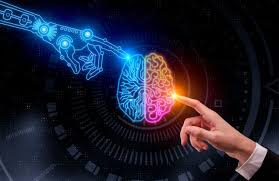

Impacto
El impacto de la inteligencia artificial en la sociedad es profundo y multifacético. Por un lado, ofrece oportunidades sin precedentes para mejorar la calidad de vida, aumentar la productividad y resolver desafíos globales como el cambio climático o las pandemias. Por otro lado, plantea importantes desafíos éticos, sociales y laborales. La automatización impulsada por la IA podría reemplazar numerosos empleos, lo que exige una transición justa y una actualización constante de habilidades. Además, el uso indebido de algoritmos puede generar sesgos o invadir la privacidad. Por ello, es esencial un desarrollo responsable y una regulación adecuada de esta tecnología.
